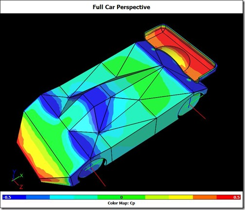

Aerodynamic Study of a Kyosho Mini-Z RC Model Racecar
Kyosho Mini-Z RC model racecars are 1/27 scale and race at speeds up to 10 m/s. Fernando Freitas races them as a hobby and was wondering about the effect of aerodynamics on his car's performance. Fernando was aware of Computational Fluid Dynamics (CFD) and thought it might help him satisfy his curiosity. At the same time Fernando came across Caedium Professional and, with a free 30-day trial, set to work. Fernando remarked:
"I found it [Caedium] to be extremely useful and easy to use."
Mini-Z RC Model Caedium CFD Simulation: Image courtesy of Fernando Freitas
After some early successes based on the Caedium RANS Flow tutorials Fernando decided to investigate the effect of the rear wing on his car. Fernando summarized his approach:
"The objective of analysis I did was not to fully quantify the aerodynamic effect of different rear wing configurations but rather to find out whether there could be such an effect at the scale (1/27) and speed (ranging from 0 to 10 m/s) that a Kyosho Mini-Z RC model typically races. I guess as I learned how to use the software and started to get results I extended the initial objective and ended up with some insightful information."
Fernando performed multiple simulations using a representative model of his car which he constructed in Caedium. The simple model he used for the main car body allowed him to focus his efforts on a key component - the model's rear wing.
Fernando focused his studies to determine the effect of the rear wing on his model's downforce and drag. In nearly all forms of motor sports downforce is a key ingredient of a successful racecar - gluing the car to the track through corners for fast lap times.
Streamlines Around a Mini-Z RC Model: Video courtesy of Fernando Freitas
Using the Caedium force monitors Fernando collated how the downforce and drag varied with different angles of attack for the wing. In one simulation he even modeled the effect of a broken wing to mimic one of his recent races, which confirmed his suspicions that a broken wing is not an effective aerodynamic aid!
Fernando's closing remarks on his Caedium experience show a practical approach to CFD modeling that many CFD users take considerably longer than the 30 days in took Fernando to realize:
"From my experience, after having done some research on free or inexpensive tools to implement a reasonable workflow ... I found that the key aspects of the model from a physical/mechanical standpoint are not that relevant (if not totally irrelevant) for the CFD simulation and in many cases can make the model too complex or even impractical to handle by the CFD software. In my case, I ended up not using Google Sketchup and Blender at all, instead creating a simple and rough model using the modeling features of Caedium."
Feedback
Questions? Ideas? Problems?